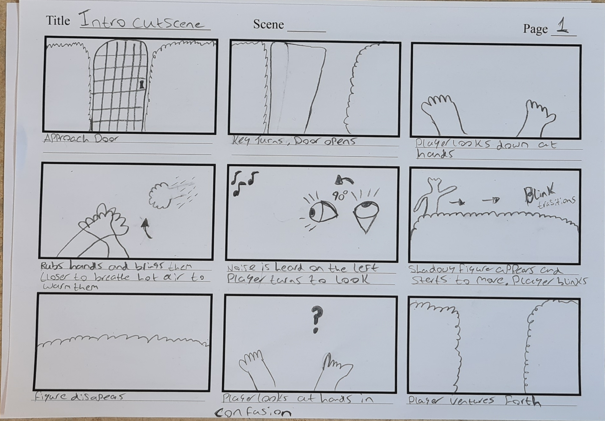
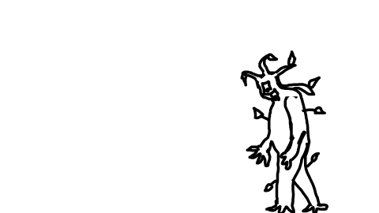
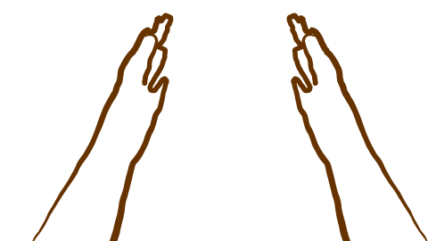
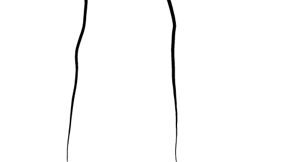
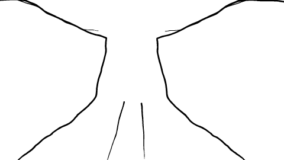
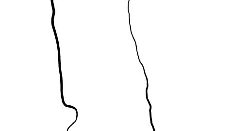
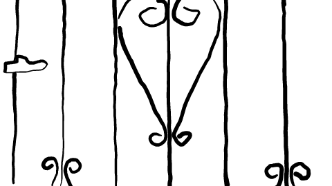

My current animation
I am currently working on an animation to be used in my game "Neglecting Yew"
The animation itself will be a 1st person cutscene to help introduce the audience to the games enemy

This is the storyboard for the animation and is a brief showcase of the key points of the animation i want to showcase
For the animation i have gone for a first person cutsscene approach which is a daunting task but a challenge is always good.
The 3 types of animation that I am co siderimg are rotoscope, mocap and 3d animation
These 3 styles are unique in their own ways
The 1st style I had thought of was general 3d animation this would be doe through the use of the 3d modelling software blender which is great for creating 3d models as well as being able to allow users to create animations. For my animation to be done through this style I would need to have the rough ideas of poses in mind so that I can change my models allowing them to become more fluid. Also a benefit that comes with using blender is that I could import the animation straight into game engine so that the animation could play out in engine allowing for a seamless transition rather than having the game start then transition to a video then back to game though this is a very much acceptable and wid3ly used approach to animations in games it can often seam jarring to the user if not done correctly.I had thought of using blender to mdoify 3d rigged hands so that i could get fine movements and also use the character model i had alraedy made so that if i wanted to further my animation i could as i would have more of the scene done
The 2nd style I had thought of was mocap. I had decided to look into mocap after doing research for the 3d animation in blender I came across a free mocap extension on twitter that allowed simple mocap with the only requirement being a webcam. The free extension can capture finger movements, generic facial movements and an upper torso movements. Since the extension is experimental as well as free it has quite a few bugs so it’s not too viable of an animation style using this method but it is good more testing and getting a feel for how the animation would work inside of blender .

This is a test animtaion done in the style of rotoscoping. as you can see it has some issues whith missing textures, this is due to the method of how teh rotoscoping has been done as with ebsyth it tries to fill in the gaps but certain movemnts can cause issues (this is most commoly seen in facial exprerssions) also havinbg more of teh screen filled in green and certain parts drawn better could fiox these issues. its is also very beneficial as industry stanadrd mocap is by far the most expensive form of animation as it requires actors and a whole lot of equipment which can raise development costs drastically
For my animation style I chose rotoscoping as I had come across “Joel Haver” on youtuber a while back. .
Joel is a youtuber who primarily does comedy sketch videos which have been in 2 styles one being the typical real life and the other being a rotoscope styled animation.
His most popular video is in this style and is where I first became aware of the type of animation.
Joel is a very skilled artist when it comes to this type of animation as he has used unique and quirky tricks to achieve great shows, an example of this is how he simply just wore a big fluffy hat but turned it into a giant alien head.
I very much like the style that Joel has brought to light as it does have flaws such as mouth movement, but it feels much nicer and unique as its not polished finely and shows these oddities and sort of revels in them.
The style now has a lot more creators who have even worked with Joel.









Principles in my animation
Appeal – appeal is the principle that covers the characters personality and how you are perceived to seem real and interesting
My animation does show appeal mainly in the hedge walk scene where u are first introduced to the monster as by using rotoscoping I have captured the way in which I walk and portrayed it in animation form.
When showing people, the animation they have pointed out that the character looks depressed and odd.
Slow in and slow out – this principle is present in the pan shots where the main character is changing his direction that he is looking
Rotoscoping
this is an animation technique in where animators will take a motion poctuf3 footage and trace over each frame to produce a very realistic animation
This technique is very good for beginners as it allows you to better dev3lop your skills by seeing the raw footage and tracing you can use this to help interpret frames.
The original method of rotoscoping was performed via animators projecting the photographed live action images on to a glass panel where they would then used fresh paper and trace over each image
The equipment used is called a rotoscope hence why the method is titled rotoscoping.
It was developed by max Fleischer a polish American animator
Through the device itself has been phased out by computers the technique is still called rotoscoping as homage to max
Rotoscoping has seen a lot of use and evolution throughout media with some notable examples being the use in Disney’s snow white also the use of rotoscoping to create the iconic lightsabres in Star Wars